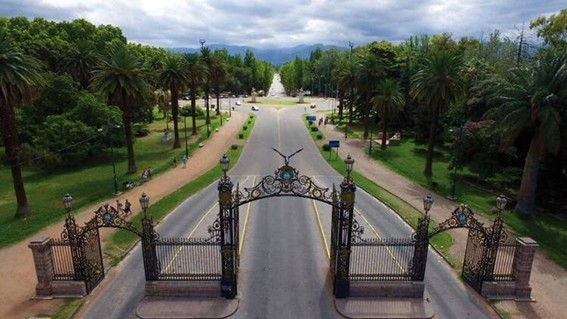
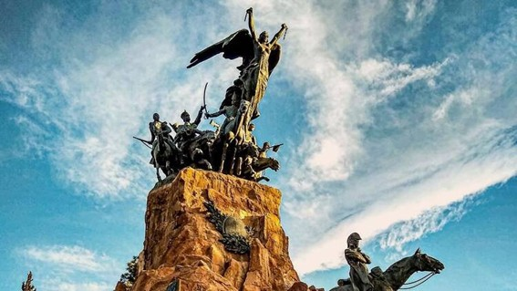
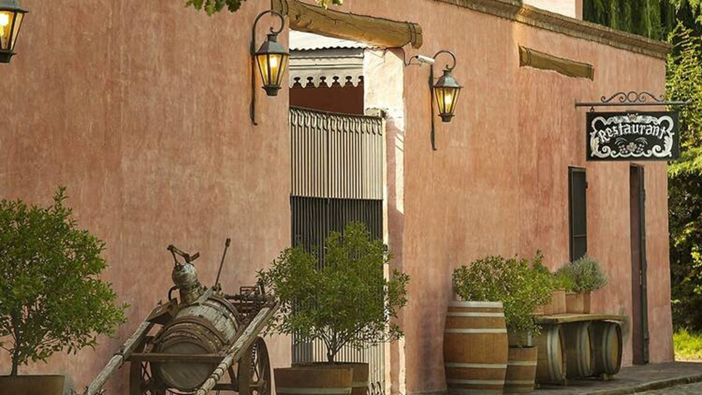
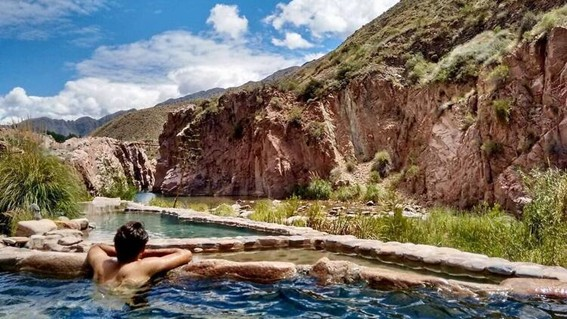
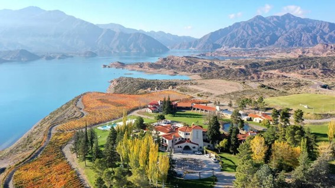
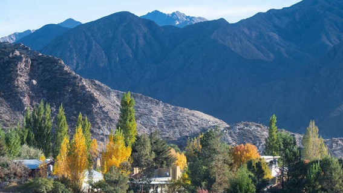
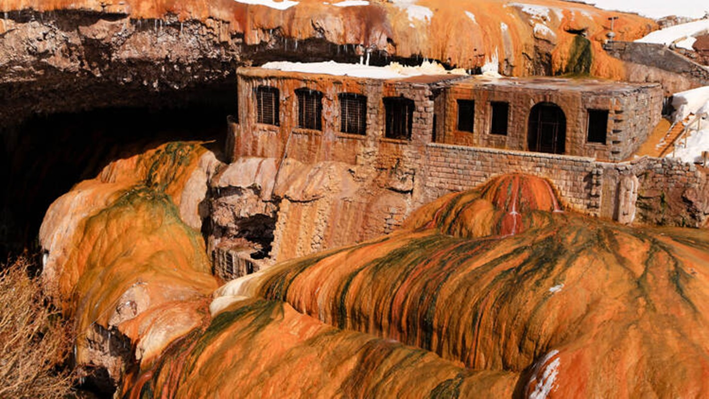
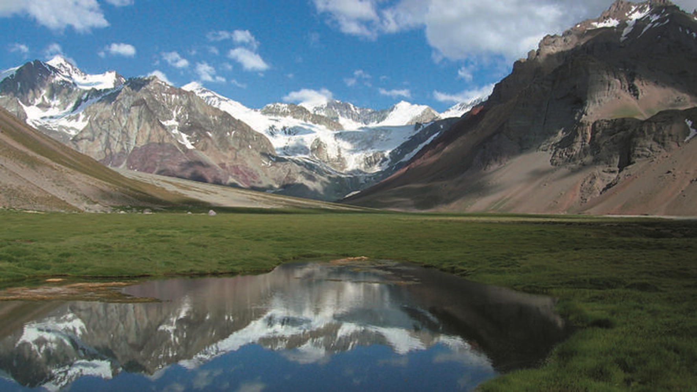

Principales puntos turísticos de la Ciudad de Mendoza
1. Parque General San Martín
El Parque General San Martín es el pulmón verde de Mendoza. Diseñado por el paisajista francés Carlos Thays, se considera el parque artificial más grande de Sudamérica. Es el lugar elegido para realizar actividades deportivas y disfrutar de caminatas. Dentro del parque, hay numerosos puntos de interés cultural y artístico. Los portones de entrada son un ícono del lugar, al igual que la Fuente de los Continentes y el lago. También, destaca el Museo Cornelio Moyano, un ejemplo de arquitectura moderna en el estilo racionalista y espacio para ir con niños y conocer más sobre la fauna y flora autóctona. Además, el parque cuenta con diversas opciones gastronómicas, como cafés, cervecerías artesanales, lugares para disfrutar de jugos de frutas y camioncitos de helados.


2. Cerro La Gloria
El Cerro de la Gloria se ubica en el Parque General San Martín. Su nombre fue cambiado oficialmente en 1913 para rendir homenaje al Ejército de los Andes. Llegar a la cima es fácil, con senderos peatonales (¡preparate para caminar!) y caminos pavimentados para subir motorizado, que cuentan con miradores. Hay estacionamiento disponible para vehículos y micros, así como servicios sanitarios y un puesto policial en la zona. Al arribar se erige el Monumento al Ejército de Los Andes, inaugurado en 1914 para conmemorar el cruce de los Andes por el general José de San Martín. Esta obra del escultor Juan Manuel Ferrari incluye una estatua ecuestre de San Martín, rodeada de figuras que representan momentos clave de la gesta libertadora.
3. Chacras de Coria
Chacras de Coria, un pintoresco pueblo mendocino, ubicado en el departamento de Luján de Cuyo, debe su nombre a la familia Coria que llegó al lugar hace varios años atrás. La Plaza Gerónimo Espejo, fundada en 1902, es el corazón del lugar y honra a un líder de la campaña libertadora junto al Gral. San Martín. La Parroquia Nuestra Señora del Perpetuo Socorro, inaugurada en 1935, es el centro religioso del pueblo y destaca por su estilo colonial. Está ubicada alrededor de la plaza Espejo. La Estación Paso de los Andes, abierta en 1890 y cerrada en 1984, conectaba Mendoza con la ciudad de Los Andes en Chile. A pesar de un incendio en 1950 que destruyó su estructura, su arquitectura de estilo inglés aún perdura y está siendo restaurada para poner un espacio cultural.


4. Termas de Cacheuta
Las Termas de Cacheuta son un destino ideal para relajarse a solo 39 km de la Ciudad de Mendoza. Abierto todo el año, el Parque de Agua termal ofrece un acceso a más de 10 piscinas con agua 100% termal. Entre sus atractivos, se encuentran piletones de piedra, un río lento de 270 metros y una piscina de olas con un chorro de 10 metros de altura. El lugar cuenta con opciones para picnics en quinchos y parrillas. Para quienes buscan un momento de bienestar, en el Hotel & Spa Termas Cacheuta - también abierto todos los días del año -, está el Terma Spa que ofrece hidroterapias y tratamientos como fangoterapia y sauna seco, todos destinados a mayores de 14 años. Los visitantes pueden optar por el TermaSpa Full Day, que incluye un almuerzo buffet criollo.
5. Potrerillos
Potrerillos se ubica al oeste de Mendoza y alberga el Dique Potrerillos, un lugar de gran belleza. En la localidad homónima se encuentran diversas villas de montaña, como Las Chacritas, El Carmelo y Vallecitos, que ofrecen casas de fin de semana y camping, así como opciones para practicar senderismo y escalada en roca. En Vallecitos, se halla la pista de esquí más antigua de la provincia y varios refugios de montaña. Desde allí, se accede a cerros importantes del Cordón del Plata, como El Plata y Rincón. A solo 14 km por la ruta 89 se encuentra Las Vegas, un pequeño pueblo en un valle arbolado donde predominan los álamos. También, a 10 km de Potrerillos, están los atractivos de El Salto: su cascada y el calvario que conduce al Cristo del Cerro.


6. Uspallata
Uspallata es un pueblo con historia. Es pasada obligada para ir a Chile, y está ubicado en el departamento de Las Heras. Un lugar que ha sido también, parada en la ruta hacia el Parque Aconcagua y al Puente del Inca. Su recorrido ofrece una experiencia de paisajes únicos y coloridos. Allí se encuentran las Bóvedas Sanmartinianas, donde se puede explorar la historia vinculada a la expedición de San Martín y la importancia estratégica de la región. Luego, el Cerro de los Siete Colores asombra creando un espectáculo de diferentes tonos que parecen pintados a mano. Para los amantes del arte pueden visitar el Parque Marañon con sus magníficas esculturas. El Puente Picheuta, de origen colonial, contrasta la ingeniería humana con la naturaleza circundante, siendo un punto ideal para fotos.
7. Puente del Inca
El Puente del Inca es un impresionante monumento natural en la provincia, y un área protegida cercana a la localidad homónima. Este fenómeno geológico es Patrimonio de la Humanidad por la UNESCO. Existen varias leyendas sobre su creación, siendo la más cautivadora la que narra la historia de un heredero del Imperio incaico. Afectado por una parálisis, su padre lo llevó desde el Cuzco en busca de cura. Para cruzar el río, los guerreros formaron un puente humano y, al mirar atrás, se petrificaron, dando origen al puente. Este asombroso lugar atrae a turistas que buscan disfrutar de su belleza.


8. Parque Aconcagua
Si buscás un destino que combine paisajes alucinantes con un toque de historia, el Parque Provincial Aconcagua es el lugar. A solo 185 kilómetros de Mendoza, este parque se extiende por 65.690 hectáreas y alberga el gigante de los Andes: el cerro Aconcagua, que se eleva a impresionantes 6.962 metros. ¡El pico más alto de todo occidental! Pero no solo se trata de escalar. Este lugar es una fiesta para los sentidos, con cumbres que superan los 5.000 metros y vistas que te van a dejar sin aliento. Hay senderos como el de Plaza de Mulas (4.370 m) y Confluencia (3.410 m), donde podés disfrutar de panorámicas increíbles sin tener que enfrentarte al frío extremo.
Tips para turistas
Planificá tu viaje, ya que la época y las actividades son clave para disfrutar tu estancia.
El sistema de colectivos es eficiente, pero para mayor libertad conviene alquilar un auto.
Aunque muchos lugares aceptan tarjeta, lleva efectivo en pesos argentinos.
Visitá bodegas con degustación y aprendé sobre la historia del vino mendocino.
Viajá en otoño o primavera, el clima es ideal y los paisajes se ven más coloridos.
Caminá por senderos del Parque Aconcagua y disfrutá vistas únicas de la cordillera.